![Banner image for nebu[lab]](images/676_nebula735x155.png)
nebu[lab] was an experimental companion publication to Nebula journal. Its format was deliberately playful and unconventional — shorter pieces, visual experiments, and work that pushed at the edges of what academic publishing could be.
2010–2011
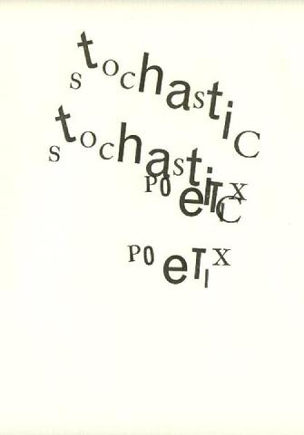
Stoch series Stoch series
Stoch series
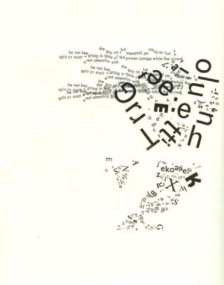
Stoch series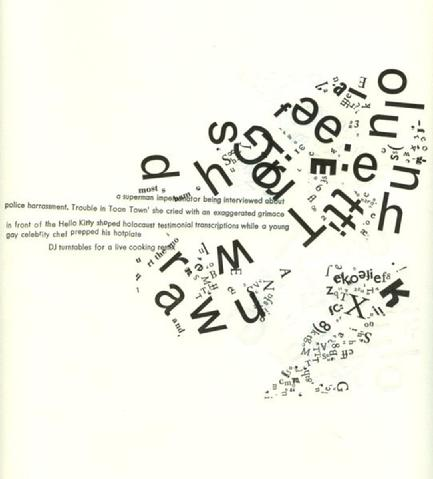
Stoch series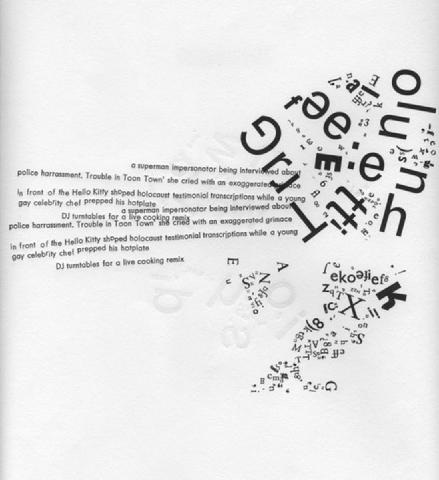
Stoch series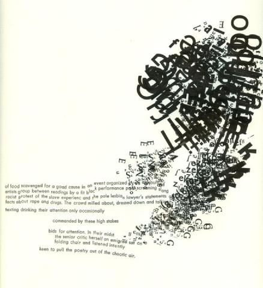
Stoch series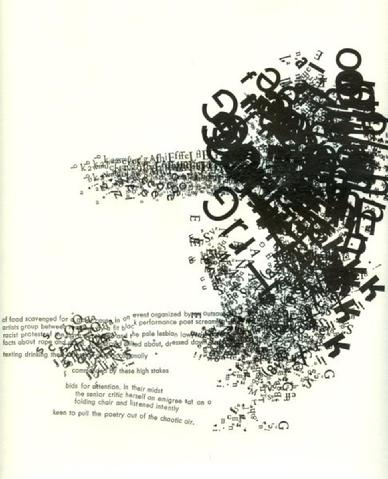
Stoch series Stoch series
Stoch series
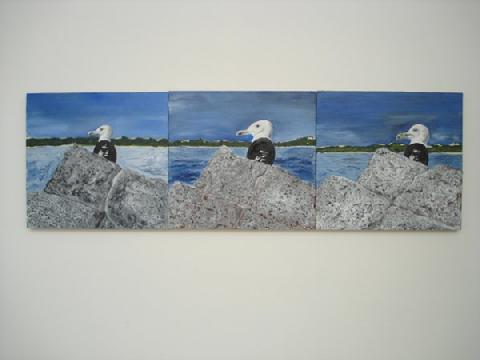
Pondgull Triptych, 2008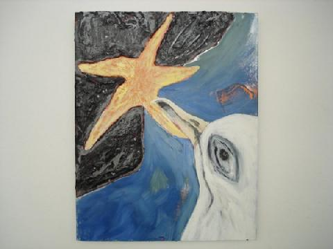
Pondgull Opts Out, 2008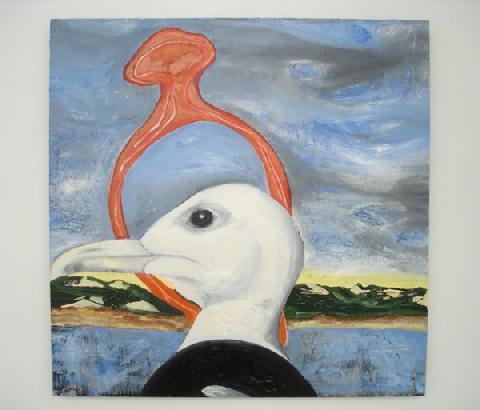
Pondgull vs. Hope, 2008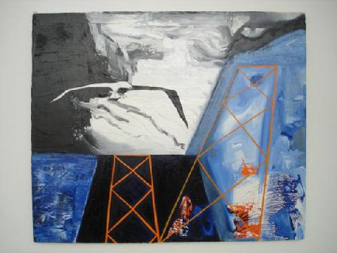
Pondgull Anger, 2009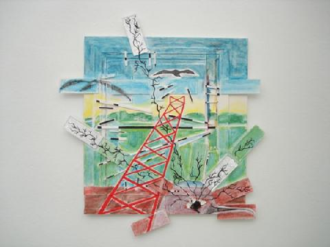
Ghosting Head, 2009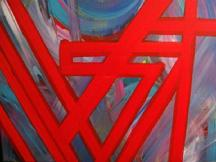
Untitled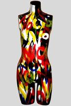
Mannequin 1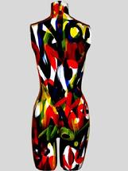
Mannequin 2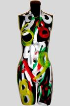
Mannequin 3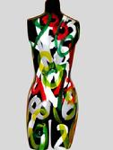
Mannequin 4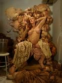
Throne Thang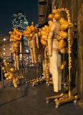
Family Value Tour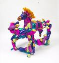
Thunder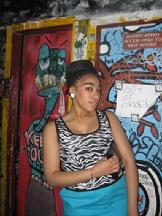
Lucille, Mars Bar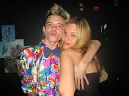
Sunny & Jake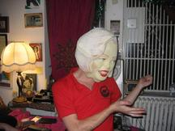
Zach & MarilynThe nebu[lab] Team
Michael Angelo Tata received his M.A. in Creative Writing/Poetry from Temple University, his M.A. in Liberal Studies from the New School for Social Research, and his Ph.D. in English Literature through the CUNY Graduate Center. His poetry and criticism have appeared in the journals LinQ, NEBULA, M/C, UGLY COUCH, LIT, LUNGFULL, EYE: RHYME, KENNING, BAD SUBJECTS, FOUND OBJECT, RHIZOMES and TO THE QUICK, as well as the Critical Studies compilation From Virgin Land to Disney World: Nature and Its Discontents in the USA of Yesterday and Today (Editions Rodopi, 2001) and the Madonna Studies anthology Madonna's Drowned Worlds: New Approaches to Her Cultural Transformations (Ashgate UK, 2004). His first chapbook of poems, The Multiplication of Joy Into Integers, won Blue Light Press' 2003 poetry prize. His Andy Warhol: Sublime Superficiality arrives from Intertheory Press in 2010.
Rebecca Beirne is Lecturer in Film, Media and Cultural Studies, University of Newcastle. She is the author of Lesbians in Television and Text after the Millennium, editor of Televising Queer Women: A Reader and has written numerous journal articles and book chapters discussing queer representation in popular culture.
David Boyle is a long-time resident of Jersey City, NJ, who teaches English. He also plays the banjo for his elementary school students, who enjoy the instrument because they are too young to know any better. Unlike the main character in Orphan and Amorcé, he does not have to be locked in a jumpsuit as the result of a muscle-bound, overbearing mother who only wants what's best for him.
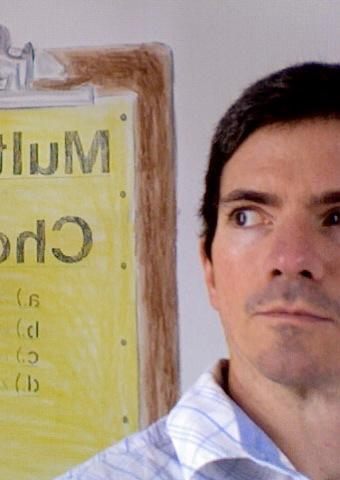
Clifford Eberly graduated from the Savannah College of Art and Design in 1992 with a BFA in Fibers. In the summer of 1993 he completed the Apprenticeship Program at the Fabric Workshop in Philadelphia. He moved to New York in 1995, where he enrolled in the Empire State College Studio in the City Program and travelled with SVA to Spain for their Painting in Barcelona course. In 2003, he returned to Lancaster, PA, after living in Puerto Rico for one year. For the last 4 years, he has operated Parlor Gallery in the Cabbage Hill area of Lancaster — an experimental gallery that exists outside the footpaths of the downtown Lancaster Arts district, giving emerging, established and under-recognized artists the opportunity to push their creative limits. This fall he begins the MFA Art Program at Claremont Graduate University in California, where he will focus on a body of work based on onomastics.
Art Director with a passion for multimedia and design. For the past fourteen years, Cora has utilized and enhanced her skill set via her professional career and schooling. She graduated from the School of Visual Arts in 1997, and has worked as a Graphic Designer, Web Designer, and Art Director in New York and Germany. Cora started her career in print design and later expanded her repertoire by attending New York University in 2000, where she received a Multimedia Certificate. Her experience encompasses a broad range of projects in design and multimedia. In 2003, Cora started her own design company, working with clients in the fashion, entertainment and pharmaceutical industries. In 2009 she co-founded Solara Films, along with Rawle Fitz Williams.
Roman Olivos graduated from Columbia University with a focus on Mathematics, Science and Technology with a Master of Arts in New Media/Digital Communication and Education. He also holds a Bachelor of Arts in English Literature with a Minor in Anthropology from Baruch College, NYC. He is currently a part-time law student. Professionally, he holds an extensive background in Digital Production and has worked as Executive Producer for Publicis Groupe, Omnicom and The Interpublic Group companies. Most recently, he has formed a small boutique US-based, bi-coastal Interactive Advertising Agency, iPublishing, LLC.

Ronaldo V. Wilson is the author of Narrative of the Life of the Brown Boy and the White Man, winner of the 2007 Cave Canem Poetry Prize (University of Pittsburgh Press, 2008), and Poems of the Black Object, winner of the 2010 Thom Gunn Award (Futurepoem Books, 2009). He is a graduate of the PhD program in English at the CUNY Graduate Center, and NYU's Graduate Creative Writing Program. Wilson has won numerous fellowships including the Provincetown Fine Arts Work Center, Cave Canem, Kundiman, Djerassi, Vermont Studio Center, and Yaddo. A co-founder of the Black Took Collective, he teaches creative writing, literature, and African American poetics at Mount Holyoke College.